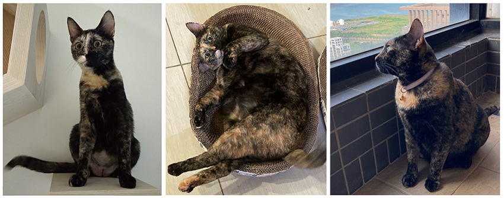
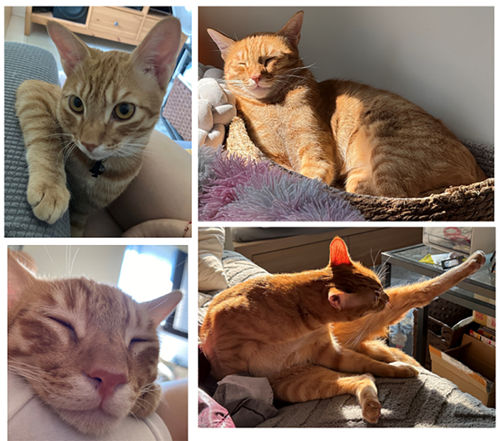
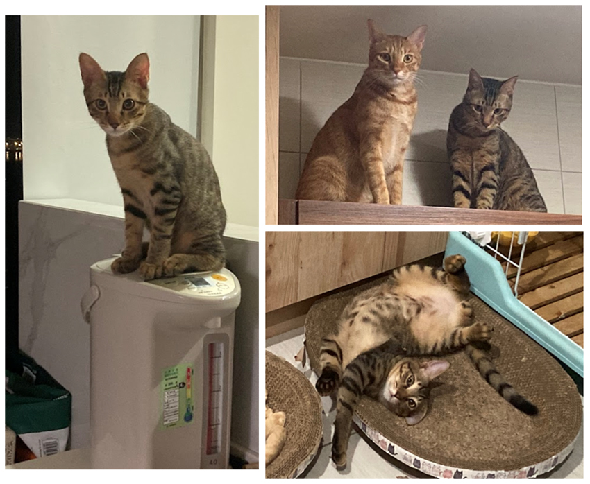
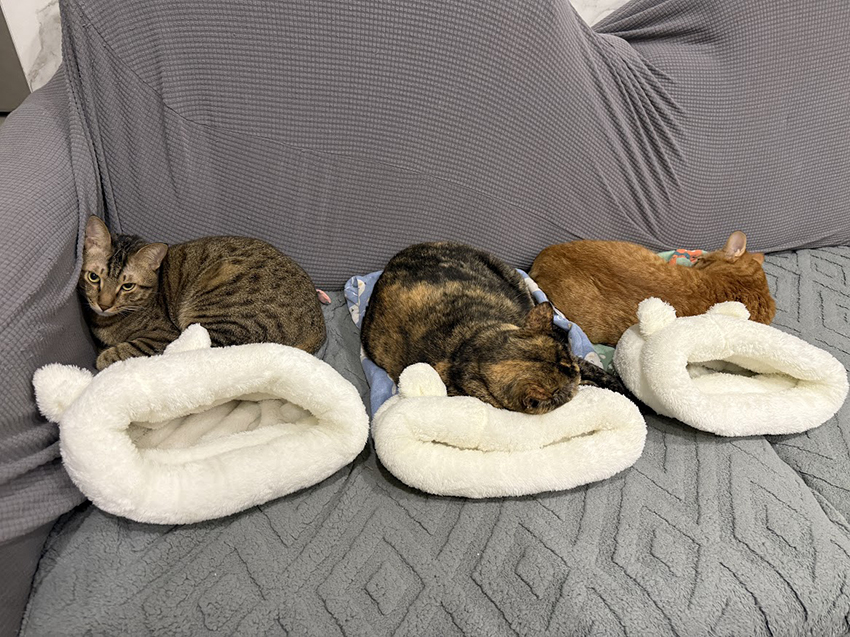

我的喵家人
宋育萍│永續發展辦公室
2020年當時領養索爾時，受嫂嫂照顧浪貓的影響，所以在同一時間也領養了當時七個月大的貓妹妹，因為牠比索爾小幾個月，所以取個相近音「咩咩」的名字。當時我期望的貓花色是黑色或全橘；但在收容所我看對眼的大橘貓突然被領養走了，收容所員工看我很失望，說有一隻前晚才被大學生帶來的貓很親人，問我要不要考慮，雖然牠是我當初最沒想到要領養的玳瑁貓，但極怕貓又被領走，我立馬說好。咩咩剛到家是個小屁孩，家裡玩跑酷把索爾的尿布墊當玩具，且還永遠吃不飽。三年不到，纖纖小淑女就變成了小胖妞了。
|  | ||
| 咩咩。 |
一人一貓一狗的日子過了兩年半，2023年5月溜索爾時，竟然在路邊聽到小奶貓叫聲，這在我住家區域是個可怕的事，在浪狗多的區域，沒媽的奶貓會有生命危險的。因為奶貓躲起來抓不到，本想狠心不管，但半夜我忍不住又跑來路邊，沒想到奶貓還在且還不停得叫，我用食物都誘惑不了，過了一小時本想放棄，最後，小奶貓還是受不了餓，探頭出來吃罐頭，我一把抓住！但沒經驗的我被咬到鮮血直流。這命大的小貓（對了~牠是全橘貓），我取了個春天的日文名 – Haru。Haru是個挑食且黏人的毛孩。只要人在哪，Haru就在哪。
|  | ||
| Haru。 |
2024年4月，社區的車道出現兩隻虎斑幼貓，怕兩隻貓被路殺，我利用誘捕籠抓起來並讓鄰居送養出去。過了一個月，其中一隻將領養人全家都抓傷後被退養，因為野性太強，怕再次送養也會被退回，所以我就將牠留了下來；希望這隻不讓人靠近的公貓能快快融入人類的社會，便將牠命名為融融。家中有了兩隻年輕的公貓後，便看到牠們時不時在跑酷，超級熱鬧！
|  | ||
| 融融。 |
家裡一狗三貓就這樣過著平靜的日子（恩，只要半夜戴好耳塞；時不時把翻到的椅子、東西歸位，其它還行……）。我的感想是，如果開始養一隻貓，未來很有可能繼續增加，貓數量只有零或是無限……。
|  | ||
| 我的喵家人。 |